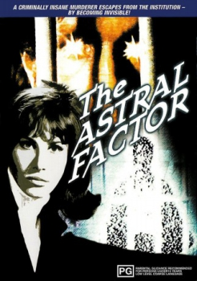
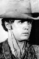

Country:United States, 96 minutes
Spoken languages:
Genres:Horror, Sci-Fi, Mystery
Director(s):John Florea
Writer(s):Arthur C. Pierce
Video Codec:Unknown
Number: 1478


Certification:PG
Storyline:
Demonstrating that a little knowledge is a dangerous thing, a convicted strangler studies the paranormal and finds a way to render himself invisible. Once he escapes, he sets out to find and eliminate five women who remind him of the mother he murdered. A police lieutenant (Robert Foxworth) sets out to safeguard them and bring the invisible killer to justice.
Cast: 
Medium: Original DVD,
Comments: Part of: Sci-Fi Classics - 50 Movies
Loaned: No
Aspect ratio: Unknown